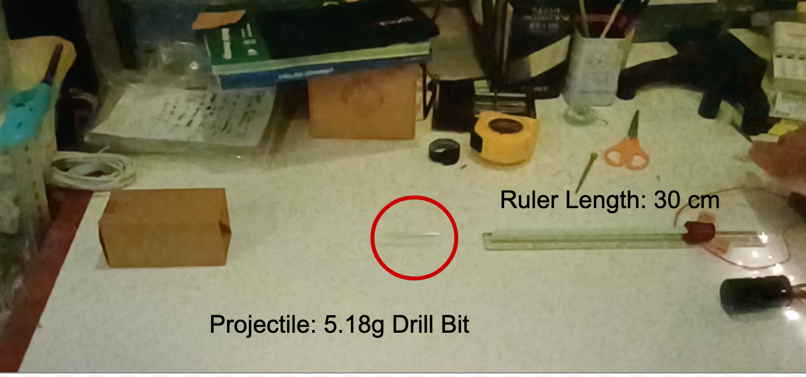
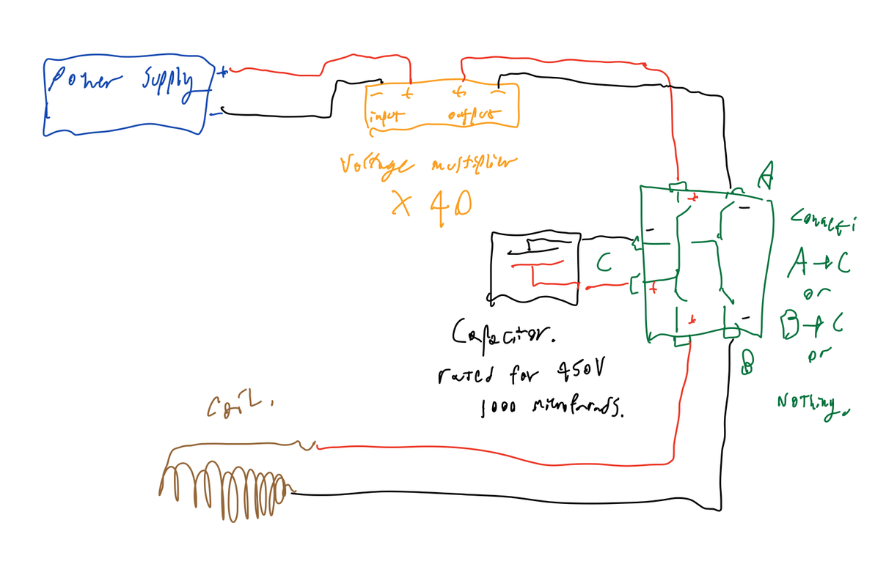
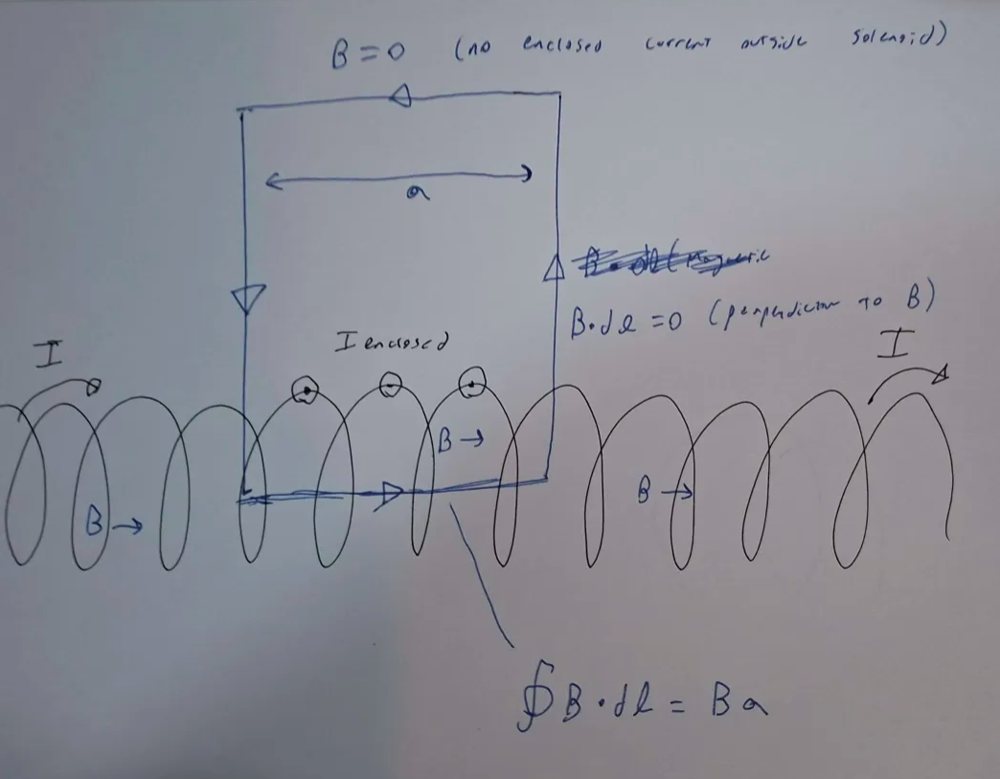
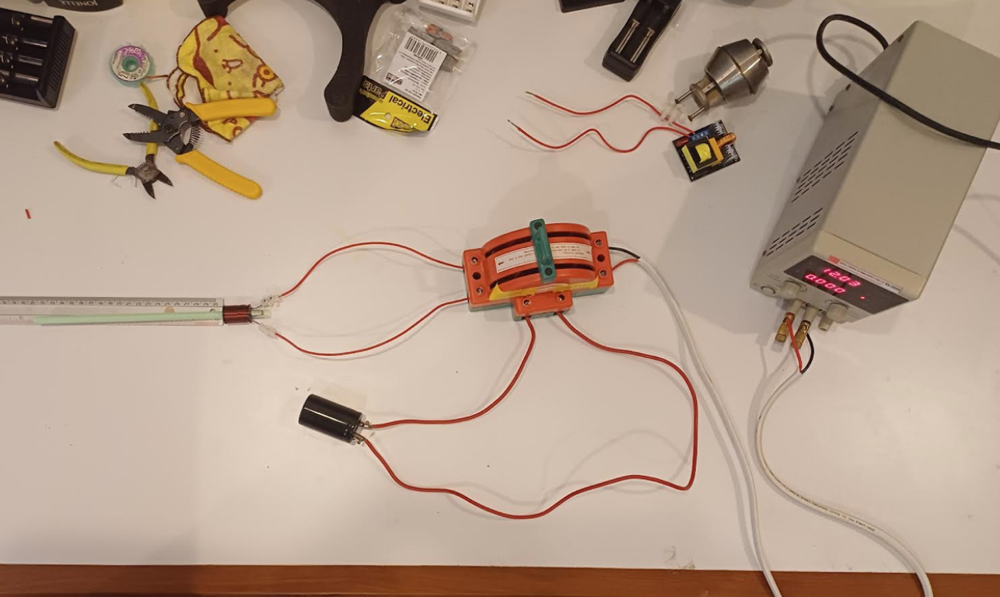
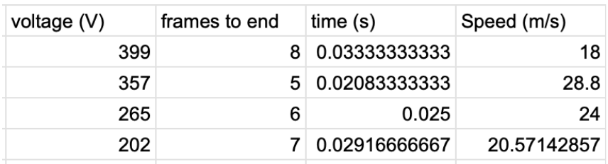
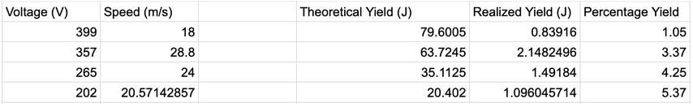

Spring 2025
Starting late 2024 and into 2025 I worked on a coilgun for the IB MYP personal project. The project was
highly relevant to the AP Physics C courses I was taking at the time. Below is a summary of my work focused
on the more technical notes not present in my submitted report. I was very inexperienced with electronics
and hardware, but
thankfully my dad helped with the construction process.
Design and Construction
A 400V capacitor is charged up with a power supply on the charging circuit until it reaches the input
voltage of 200-400 volts.
Normal power supplies (reasonably) do not supply 200-400V, so I used a voltage step-up circuit that
increased the voltage by roughly 40 times.
Once charged, the capacitor is disconnected from the power supply. It is then discharged through a coil of
wire. The induction prevents
an immediate short, but very soon a high current flows through. The inductor then acts as a solenoid,
creating a magnetic field that drives the metal drill bit inside
forward. This is a crude original sketch of the design:

Physical Mechanism - RLC circuits
My coilgun's discharge is essentially an RLC circuit. With a current \(I\), the voltage across the inductor is \(V_L = L \frac{dI}{dt}\), the voltage across the resistor is \(V_R = IR\), and the voltage across the capacitor is \(V_C = \frac{Q}{C}\). By the Kirchhoff voltage law, the voltage around a closed loop is zero (voltage is a scalar field): $$L \frac{dI}{dt} + IR + \frac{Q}{C} = 0$$ Differentiating with respect to time: $$L \frac{d^2I}{dt^2} + R \frac{dI}{dt} + \frac{I}{C} = 0$$ Let us guess that \(I(t) = e^{kt}\) for good reason. $$L k^2 e^{kt} + R k e^{kt} + \frac{1}{C} e^{kt} = 0$$ $$L k^2 + R k + \frac{1}{C} = 0$$ Solving with the quadratic equation gives us: $$k = \frac{-R \pm \sqrt{R^2 - \frac{4L}{C}}}{2L}$$ The final solution is a combination of the two roots: $$I(t) = A e^{k_1 t} + B e^{k_2 t}$$ Subject to the initial condition \(I(0) = 0\) at the start of discharge: $$0 = A + B$$
If the term under the square root is negative, then \(k_1\) and \(k_2\) are imaginary so the circuit oscillates until the resistance dampens it. Otherwise, the roots are real and the current just increases to its peak and decays exponentially. More likely the simple decay is the case in my coilgun, as I observed metal sparks from the capacitor connection indicating signficant resistance. The coil is not very inductive either.
Physical Mechanism - Magnetic response
Inside the coil, the current through the solenoid creates a magnetic field within. This can be estimated with Ampere's law: $$\oint \vec{B} \cdot d\vec{l} = \mu_0 I_{enclosed}$$ Assume the solenoid is long enough to be considered infinite. Consider this region:

The magnetic field is zero outside of the solenoid, and uniform inside, so the line integral is only nonzero in the bottom part of the rectangle. The total value is \(B a\). For a solenoid with \(n\) turns per unit length, the enclosed current is \(n I a\). Using Ampere's law gives: $$\mu_0 n I a = B a$$ $$B = \mu_0 I n$$ For the magnetic field strength. Therefore, I chose the densest coil I could find to maximize \(n\) and hence the field strength. Also with a non-infinite and non-ideal coil this is only an approximation.
Adding the iron drill bit at the center changes a few things. Firstly, when placed inside the magnetic field the iron bit gets magnetized by the field and is attracted to the center of the solenoid. This is because for a finite coil, the center maximizes the magnetic flux and therefore the inductance. For my design I had to place the iron projectile just behind the center of the solenoid, so that by the time it reached the center, the current had already dissipated, preventing a backwards force.
In all, the capacitor discharge creates a short-lived exponential pulse through the coil. This creats a magnetic field inside, imparting forward momentum on the projectile towards the center of the coil.
Testing

This is the setup I used for testing. The charging circuit is on the right, while the dischage is on the left. I measured projectile velocity with my camera at 240 fps by counting the frames to travel a distance of 60 cm. This let me measure the effect of capacitor voltage on projectile velocity. This is what I determined:

While quite fast for pure magnetic forces, the efficiency was quite low at around 5%. The energy efficiency can be calculated by comparing the electrical potential energy in the capacitor \(U = \frac{1}{2}CV^2\) to the final kinetic energy of the projectile \(K = \frac{1}{2}mv^2\). As shown below, the efficiency decreased with higher voltage, which came with a lot of sparks and noise.

Conclusions
Overall this experiment was the first time I could put some of my calculus-based physics knowledge to use. It did a very good job at forcing me to learn differential equations and electromagnetism beyond what I was already doing. More difficult was the hardware which I was clueless at. My main focus was being as safe as I could from the 400 volt death cylinder. In retrospect better sodering to the capacitor, thicker wires, and real connections would have cut down a lot of the sparks and bangs and made the projectile fly even quicker. The results were good though.